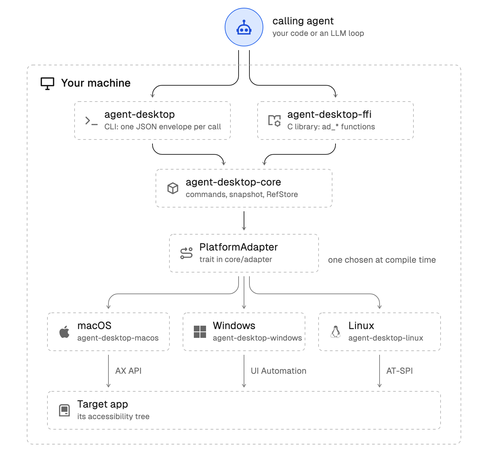

공식 설치 문서 기준. 클로드 코드·코덱스·제미나이 같은 AI에 붙이면, AI가 메모장·계산기·설정·탐색기 같은 앱의 버튼에 번호를 매기고, 그 번호로 대신 누르고 값을 넣어요. 누른 뒤엔 화면을 다시 읽어 제대로 됐는지 확인해요. 기본 설정에선 내 마우스를 움직이지 않고 쓰던 창도 뺏지 않아요. 버셀이 공개한 무료 오픈소스(Apache-2.0)예요.
아래 '복사해서 쓰기'의 설치를 넣어요. 다 되면 '상태 확인'으로 운영체제·권한이 잡혔는지 봐요. 윈도우에서 실행 파일이 서명되지 않았다고 SmartScreen이 막으면 '추가 정보 → 실행'을 눌러요.
클로드 코드 같은 도구에 쓰는 법을 알려 주는 공식 스킬을 붙여요('스킬 붙이기'). 스킬 대신 MCP로 붙여도 돼요('MCP 설정').
AI에게 앱 이름과 할 일, 끝났는지 확인하는 방법까지 말해요. AI가 앱을 읽어 버튼마다 번호(ref)를 받고, 번호로 누른 뒤 다시 읽어 확인하는 걸 반복해요.
기본은 '보이지 않는 모드'예요. 클릭·값 넣기·스위치·선택·스크롤은 접근성 기능으로 처리해서 내 마우스를 움직이지 않고 앞 창도 뺏지 않아요. 다른 창 뒤에 가려진 창도 다룰 수 있어요. 단, 최소화된 창은 못 다뤄요.
'여러 일꾼 세션'으로 시작하면 일꾼(에이전트 id)마다 자기 커서가 생기고, 커서 옆에 하는 일을 이름표로 띄울 수 있어요. 커서는 같이 움직이고, 실제로 누르는 건 차례로 해요. 이름표 커서는 맥·윈도우에서 보여요.
윈도우에서 글자 타자(type)·더블클릭·끌어 옮기기·마우스 이동은 실제 입력이 필요해서 '--headed'를 붙여야 해요. 이때는 내 마우스가 움직이니 맡겨 둔 동안 손을 떼요. 글자는 '보이지 않는 모드'에서 set-value로 넣을 수 있어요.
내 AI가 agent-desktop을 부르면, 운영체제의 접근성 기능(윈도우 UI Automation·맥 AX·리눅스 AT-SPI)으로 앱을 읽고 눌러요. agent-desktop 안에는 AI 모델이 없어요 — 생각은 내 AI가, 손은 agent-desktop이 맡아요.

터미널(PowerShell·맥 터미널)
npm install -g agent-desktop
설치 뒤
agent-desktop status
맥만
agent-desktop permissions --guide
클로드 코드 등 AI 코딩 도구를 쓰는 폴더에서
npx skills add https://github.com/vercel-labs/agent-desktop --skill agent-desktop
스킬 대신 MCP로 붙일 때, MCP 설정 파일에
{ "mcpServers": { "agent-desktop": { "command": "agent-desktop", "args": ["mcp"] } } }AI 입력칸
agent-desktop으로 메모장을 열고 오늘 회의 내용 세 줄을 적어 줘. 다 적은 뒤 화면을 다시 읽어서 글이 들어갔는지 확인해 줘.
AI 입력칸
agent-desktop으로 윈도우 설정 > 시스템 > 알림에서 방해 금지 모드를 켜 줘. 켜진 걸 확인하고 알려 줘.
AI 입력칸(여러 일꾼을 부를 수 있는 도구)
agent-desktop 세션을 --cursor --multi-agent로 시작하고, 일꾼 셋을 불러 각자 다른 --agent-id로 일을 나눠 줘: 1번은 메모장에 회의록, 2번은 계산기로 합계, 3번은 설정에서 방해 금지. 끝나면 세션을 닫아 줘.
직접 시작할 때
agent-desktop session start --cursor --multi-agent
도움이 되셨다면
@ai.antenna.kr
에서 바로 쓰는 AI 활용법을 계속 올립니다.